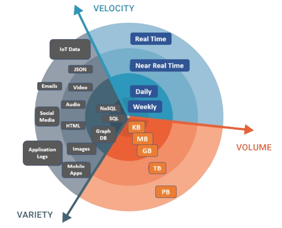

Traitement des données volumineuses
Présentation des architectures informatiques et des outils logiciels permettant de faciliter le traitement de données volumineuses.
Dérouler les slides ci-dessous ou cliquer ici pour afficher les slides en plein écran.
Le phénomène du big data est maintenant bien documenté : la génération et la collecte de données par une multitude de sources (capteurs IoT, interactions quotidiennes sur les réseaux sociaux, transactions en ligne, dispositifs mobiles, etc.) démultiplie les volumes de données disponibles pour l’analyse. Les raisons pouvant mener à s’intéresser à de telles données pour des projets de data science sont nombreuses : haute disponibilité, plus grande finesse des phénomènes observés, bases pour l’entraînement de modèles de ML de plus en plus gourmands (comme les LLM), etc.
On définit souvent le big data comme étant la situation où les données sont volumineuses au point qu’on ne soit plus en mesure de les traiter sur une unique machine. Cette définition relativiste peut sembler réductrice mais présente néanmoins l’intérêt de souligner qu’une source de données peut, selon les époques et les environnements, faire appel à des compétences différentes. Le fait de passer à des données big data n’est en effet pas un changement seulement de volume: on change souvent de nature d’infrastructure informatique et cela a des implications fortes sur les compétences à mettre en oeuvre pour traiter des données et l’évolutivité des chaines de production en question.
En contrepartie, le traitement de ces données génère de nouveaux défis. Ces derniers peuvent être résumés par les “trois V”, une manière désormais admise de caractériser ces nouvelles sources de données (Sagiroglu and Sinanc 2013) :
Volume : des volumes massifs de données, souvent à une échelle bien supérieure à ce que les systèmes traditionnels peuvent traiter efficacement. Par conséquent, de nouvelles architectures de stockage et de traitement sont nécessaires afin de gérer de telles volumétries.
Vitesse : ces données sont généralement produites à haute fréquence, jusqu’au temps réel. Là encore, cela nécessite des ajustements dans les architectures et les méthodes de traitement, comme les méthodes de stream processing par exemple.
Variété : ces données présentent des sources et des formats très variés, allant des bases structurées (données tabulaires) aux données non-structurées (texte, image, vidéo, etc.). Là encore, les techniques de traitement adaptées vont dépendre des formes prises par les données. Dans ce cours, nous nous concentrerons sur des données relativement structurées, dans la mesure où ces dernières restent centrales dans les projets analytiques de data science.

Lorsque l’on envisage de passer en production un projet de data science basé sur des données volumineuses, l’adoption de bonnes pratiques de développement n’est pas seulement recommandée, elle est indispensable. En effet, les données volumineuses voire massives introduisent une complexité significative dans tous les aspects du cycle de vie d’un projet de data science, de la collecte et du stockage des données à leur traitement et analyse. Les systèmes doivent être conçus pour non seulement gérer le volume actuel de données, mais aussi pour être évolutifs face à une croissance future inévitable. Les bonnes pratiques de développement facilitent cette évolutivité en promouvant des architectures modulaires, des codes réutilisables, et des technologies adaptées au traitement des grandes quantités de données.
Face à ces enjeux, le choix des technologies est primordial. Dans ce cours, nous présenterons trois axes principaux qui peuvent guider ces choix : l’infrastructure informatique, des formats de données adaptés aux données volumineuses, et des frameworks (solutions logicielles et leur écosystème) utilisés pour le traitement de la donnée.
Infrastructures
Evolution des infrastructures de données
Historiquement, les données ont été stockées dans des bases de données, c’est à dire des systèmes de stockage et d’organisation de la donnée. Ces objets ont vu le jour dans les années 1950, et ont connu un essor particulier avec les bases de données relationnelles dans les années 1980. Cette technologie se révélant particulièrement pertinente pour organiser le stockage des données “métier†des entreprises, elle a été à la base des data warehouses, qui ont longtemps constitué la référence des infrastructures de stockage de la donnée (Chaudhuri and Dayal 1997). Si leur implémentation technique peut être de nature variée, leur principe est simple : des données de sources multiples et hétérogènes sont intégrées dans un système de bases de données relationnel selon des règles métier grâce à des processus dits ETL (extract-transform-load), afin de les rendre directement accessibles pour une variété d’usages (analyse statistique, reporting, etc.) à l’aide d’un langage normalisé : SQL (Figure 1).
Au début des années 2000, la montée en puissance des usages de nature big data dans les entreprises met en lumière les limites des data warehouses traditionnels. D’une part, les données traités présentent une diversité croissante de formats (structurés, semi-structurés et non structurés), et cette réalité rentre difficilement dans le monde ordonné des data warehouses, qui nécessite de spécifier a priori le schéma des données. Pour pallier ces limites, de nouvelles infrastructures de stockage vont être développées : les data lakes, qui permettent la collecte et le stockage de quantités massives de données de nature diverse (Figure 2).
D’autre part, la taille considérable de ces données rend de plus en plus difficile leur exploitation sur une unique machine. C’est dans ce contexte que Google publie le paradigme MapReduce (Ghemawat, Gobioff, and Leung 2003; Dean and Ghemawat 2008), posant les bases d’une nouvelle génération de systèmes permettant de traiter de larges volumes de données de manière distribuée. Dans les infrastructures traditionnelles, le passage à l’échelle était réalisé selon un principe de scalabilité verticale, c’est à dire en augmentant la puissance d’une machine de calcul ou en choisissant une machine plus performante. Cette approche devient néanmoins rapidement très coûteuse et se heurte aux limites physiques des composants. A l’inverse, les architectures distribuées adoptent le principe de scalabité horizontale : en installant des serveurs — chacun d’une puissance limitée — en parallèle et en adaptant les algorithmes à cette logique distribuée, on parvient à traiter des données massives avec du matériel standard. Dans la lignée de ces travaux, émerge l’écosystème Hadoop qui offre une combinaison de technologies complémentaires : un data lake (HDFS - Hadoop Distributed File System), un moteur de calcul distribué (MapReduce) et des outils d’intégration et de transformation de la donnée (Figure 3). Cet éco-système est progressivement complété par des outils qui vont démocratiser la capacité à traiter des données big data : Hive, qui convertit des requêtes SQL en traitements MapReduce distribués, puis Spark, qui lève certaines limites techniques de MapReduce et fournit des API dans plusieurs langages (Java, Scala, Python, etc.). Le succès de l’éco-système Hadoop dans les entreprises est considérable dans la mesure où il permet de traiter des volumes de données sans précédent — jusqu’au péta-octet — et des vélocités considérables — jusqu’au temps réel — à l’aide de langages de programmation non réservés aux seuls informaticiens.

Hadoop. La donnée volumineuse est découpée en blocs, et le stockage ainsi que le traitement des différents blocs sont distribués sur plusieurs nœuds de calcul. Les algorithmes utilisés pour traiter la donnée sont adaptés au mode distribué via le paradigme MapReduce : on applique à chaque bloc une fonction (étape “map†; par exemple, compter les fréquences des mots qui apparaissent dans les documents d’un bloc), puis on effectue une étape d’agrégation (étape “reduce†; par exemple, agréger les fréquences des différents blocs pour obtenir des fréquences agrégées sur l’ensemble des données initiales). Les données en sortie de ces deux étapes sont généralement de taille bien inférieure à celle des données source, et peuvent donc être rapatriées en local pour des traitements ultérieurs (ex : faire de la visualisation de données). Source : glennklockwood.com
À la fin des années 2010, les architectures basées sur Hadoop connaissent néanmoins un net déclin de popularité. Dans les environnements Hadoop traditionnels, le stockage et le calcul sont co-localisés par construction : si les données à traiter sont réparties sur plusieurs serveurs, chaque section des données est directement traitée sur la machine hébergeant cette section, afin d’éviter les transferts réseau entre serveurs. Dans ce paradigme, la mise à l’échelle de l’architecture implique une augmentation linéaire à la fois des capacités de calcul et de stockage, indépendamment de la demande réelle. Dans un article volontairement provocateur et intitulé “Big Data is Dead†(Tigani 2023), Jordan Tigani, l’un des ingénieurs fondateurs de Google BigQuery, explique pourquoi ce modèle ne correspond plus à la réalité de la plupart des organisations exploitant intensivement de la donnée. Premièrement, parce que “dans la pratique, la taille des données augmente beaucoup plus rapidement que les besoins en calcul”. Même si la quantité de données générées et nécessitant donc d’être stockées croît de manière rapide au fil du temps, il n’est généralement pas nécessaire d’interroger l’ensemble des données stockés mais seulement les portions les plus récentes, ou seulement certaines colonnes et/ou groupes de lignes. Par ailleurs, Tigani souligne que “la frontière du big data ne cesse de reculer†: les avancées dans les capacités des serveurs et la baisse des coûts du matériel signifient que le nombre de charges de travail ne tenant pas sur une seule machine — une définition simple mais efficace du big data — a diminué de manière continue (Figure 4). L’apparition de nouveaux formats de données rendant plus efficients à la fois le stockage et le traitement de la donnée en mémoire participent également à cette dynamique (voir Section 2). En conséquence, en séparant correctement les fonctions de stockage et de calcul, même les traitements de données substantiels peuvent finir par utiliser “beaucoup moins de calcul que prévu […] et pourraient même ne pas avoir besoin d’un traitement distribué du tout”. Ces enseignements plaident donc de manière générale pour le choix d’infrastructures dans lesquelles ressources de calcul et de stockage sont le plus faiblement couplées possibles.
L’apport des technologies cloud
Dans la lignée des observations de Tigani, on observe ces dernières années une transition marquée des organisations vers des architectures plus flexibles et faiblement couplées. L’avènement des technologies cloud a joué un rôle déterminant dans cette transition, et ce pour plusieurs raisons. D’abord, une raison technique : par rapport à l’époque où Hadoop constituait l’infrastructure big data de référence, la latence des flux réseaux est devenue une préoccupation bien moindre, rendant le modèle de co-localisation du stockage et des ressources de calcul sur de mêmes machines moins pertinent. Ensuite, une raison liée aux usages : si le volume des données générées continue de croître, c’est surtout la diversification des données exploitées qui marque l’évolution récente de l’éco-système. Les infrastructures modernes doivent doivent non seulement être capables de traiter de grands volumes, mais aussi être adaptables sur de multiples dimensions. Elles doivent pouvoir prendre en charge diverses structures de données (allant des formats structurés et tabulaires aux formats non structurés comme le texte, les images, le son et la vidéo) et permettre une large gamme de techniques computationnelles, du calcul parallèle aux modèles d’apprentissage profond qui nécessitent des GPU, ainsi que le déploiement et la gestion d’applications (Li et al. 2020).
Ces dernières années, deux technologies intimement liée au cloud — justifiant leur qualificatif de technologies cloud-native — ont émergé comme des solutions essentielles pour atteindre ce besoin d’environnements de calcul plus flexibles : la conteneurisation et le stockage objet. La conteneurisation est une technologie centrale dès lors qu’on aborde le sujet de la mise en production, dans la mesure où elle permet de garantir la reproductibilité et la portabilité des projets, c’est à dire leur capacité à fonctionner correctement dans différents environnements de traitement. Par conséquent, la technologie des conteneurs sera présentée en détail dans les chapitres concernant la Portabilité et le Déploiement. Nous nous concentrons dans cette section sur la deuxième technologie cloud-native devenue un standard dans les infrastructures de données modernes : le stockage objet.
Les conteneurs étant par construction sans état (stateless), il est nécessaire dans une infrastructure conteneurisée de prévoir une couche de persistence pour stocker à la fois les données brutes en entrée des traitements et les données transformées en sortie de ces derniers (Figure 5). Dans l’écosystème des infrastructures de données conteneurisées, le stockage dit “objet†s’est progressivement imposé comme référence, largement popularisée par l’implémentation S3 (Amazon Simple Storage Service) d’Amazon (Mesnier, Ganger, and Riedel 2003; Samundiswary and Dongre 2017). Afin de comprendre cette prédominance, il est utile de comparer ce mode de stockage aux autres modes existants.
Schématiquement, on peut distinguer trois grandes approches en matière de stockage : le stockage de fichiers (filesystem), le stockage par bloc (block storage) et le stockage d’objets (object storage) (Figure 5). Le stockage de fichiers est le plus intuitif : les données sont organisées sous forme d’une structure hiérarchique de répertoires et de fichiers — comme sur un ordinateur personnel. Facile d’utilisation et adapté aux environnements traditionnels, ce mode de stockage passe difficilement à l’échelle et requiert des interventions manuelles pour monter et gérer les accès aux fichiers, ce qui restreint l’autonomie des utilisateurs et n’est pas adapté aux environnements de traitement éphémères comme les conteneurs. Le stockage par bloc propose un accès de bas niveau aux données sous forme de blocs contigus — à l’image du stockage sur un disque dur — garantissant des performances élevées et une faible latence. Il s’avère donc très pertinent pour des applications qui exigent un accès rapide aux données stockées, comme une base de données. En revanche, il passe là encore difficilement à l’échelle du fait du coût de la technologie et de la difficulté à faire croître horizontalement ce type de stockage. Enfin, le stockage objet divise quant à lui les fichiers de données en morceaux appelés “objets†qui sont ensuite stockés dans un référentiel unique, qui peut être distribué sur plusieurs machines. Chaque objet se voit attribuer un certain nombre de métadonnées (nom de l’objet, taille, date de création, etc.) dont un identifiant unique qui permet au système de retrouver l’objet sans la nécessité d’une structure hiérarchique comme celle d’un filesystem, ce qui réduit drastiquement le coût du stockage.
Les différentes propriétés du stockage objet le rendent particulièrement pertinent pour construire une infrastructure conteneurisée pour la data science. D’abord, il est optimisé pour la scalabilité : les objets stockés ne sont pas limités en taille et la technologie sous-jacente permet un stockage efficient de fichiers potentiellement très volumineux, si besoin en les distribuant horizontalement. Ensuite, il est source d’autonomie pour les utilisateurs : en stockant les données sous forme d’objets enrichis de métadonnées et accessibles via l’API standardisée S3 d’Amazon (Figure 5), il permet aux utilisateurs d’interagir directement avec le stockage via leur code applicatif (en R, Python, etc.) tout en offrant une gestion très fine des permissions — jusqu’aux droits sur un fichier — vie des jetons d’accès, garantissant ainsi une traçabilité accrue des opérations effectuées. Enfin, le stockage objet joue un rôle clé dans l’objectif de construction d’une infrastructure découplée comme celle évoquée précédemment. Dans la mesure où les dépôts de données — appelés “buckets†— sont interrogeables via des requêtes HTTP standards, les environnements de calcul peuvent importer par le biais du réseau les données nécessaires aux traitements réalisés. Ainsi, les ressources de stockage et de calcul n’ont plus besoin d’être sur les mêmes machines ni même nécessairement dans le même lieu, et peuvent ainsi évoluer indépendamment en fonction des besoins spécifiques de l’organisation.
Formats de données
Une autre dimension majeure à considérer pour le traitement des données massives est la manière dont on stocke ces données. Le choix d’un format de données repose sur un arbitrage entre plusieurs critères, notamment la finalité (traitement, analyse, diffusion…), le public cible (population générale, membres du projet, etc.), la volumétrie et l’interopérabilité. Les formats classiques comme le CSV, le JSON ou le XML sont largement utilisés pour le traitement et la diffusion de données, en particulier pour leur praticité : ils sont au format texte, ce qui les rend facilement prévisualisables dans un éditeur — on dit qu’ils sont “human-readable”. Par ailleurs, ils sont naturellement interopérables : le texte peut être lu simplement depuis n’importe quel langage de programmation, et les différentes librairies de lecture de fichiers intègre nativement leur lecture. Néanmoins, ces formats montrent rapidement leurs limites face aux besoins d’analyse sur des données massives. Leur absence de compression entraîne une consommation élevée d’espace disque. Par ailleurs, leur représentation sous forme de lignes (Figure 7) à la fois sur disque et en mémoire les rend peu efficients, dans la mesure où il est nécessaire de charger un fichier entier pour pouvoir effectuer des opérations statistiques sur les colonnes et/ou les lignes.
Une innovation majeure de la dernière décennie au sein de l’éco-système de la donnée est l’émergence de formats de données qui pallient les différentes limites des formats traditionnels précédemment évoquées. Le format le plus populaire à ce titre, et qui est ainsi devenu un véritable standard pour le stockage de données, est le format Apache Parquet. Ce format présente en effet un ensemble de caractéristiques qui le rendent particulièrement adapté aux applications de data science. D’abord, il s’agit d’un format compressé, ce qui en fait un format très adapté au stockage de données volumineuses. Si le degré de compression dépend intimement de la structure des données, il n’est pas rare de voir un même jeu de données occuper 10 fois moins de place en Parquet qu’en CSV. Ensuite, le format Parquet est interopérable : les fichiers de ce format peuvent être aussi bien requêtés à partir de langages courants (comme Python, R ou SQL) qu’avec des langages dédiés au traitement des données massives comme Spark.
Mais le facteur essentiel qui explique l’adoption généralisée du format Parquet dans les applications de data science est sa performance en lecture. S’agissant d’un format compressé, on pourrait intuitivement s’attendre à des performances inférieures comparé à la lecture des mêmes données sous la forme d’un fichier texte : si l’on compresse un fichier CSV au format zip par exemple, il faut payer un coût de décompression pour pouvoir lire le fichier. Au contraire, la compression des données en Parquet est très optimisée, ce qui permet des performances en lecture bien supérieures à celle d’un fichier CSV. Une propriété essentielle du format Parquet pour comprendre cette performance en lecture est le fait qu’il soit “orienté-colonne”, c’est à dire que les données sont stockées sous forme de colonnes et non de lignes comme dans les formats textuels traditionnels (Figure 7). Cette propriété le rend particulièrement adapté pour la data science dans la mesure où la plupart des opérations statistiques sont de nature analytique (dites OLAP - Online Analytical Processing) : elles impliquent la sélection de colonnes spécifiques, le calcul de nouvelles variables, la réalisation d’agrégations basées sur des groupes, etc. Le stockage orienté ligne — comme dans un fichier CSV — n’est pas adapté à ces opérations analytiques, car il nécessite de charger l’ensemble du jeu de données en mémoire afin d’effectuer une requête. À l’inverse, le stockage orienté colonne permet de ne lire que les colonnes de données pertinentes, ce qui réduit considérablement les temps de lecture et de traitement pour ces charges de travail analytiques (Abdelaziz et al. 2023). En pratique, les formats colonnes populaires tels que Parquet utilisent une représentation hybride : ils sont principalement orientés colonne, mais intègrent également un regroupement astucieux basé sur les lignes pour optimiser les requêtes de filtrage.
Une autre propriété importante du format Parquet est sa capacité native à produire des fichiers partitionnés, c’est à dire à distribuer un fichier de données selon une ou plusieurs clés de partitionnement. Dans la majorité des cas, les traitements statistiques ne concernent pas l’ensemble des données d’une source de données : on voudra souvent restreindre les calculs à une zone géographique, une fenêtre temporelle, etc. Si les données à traiter sont disponibles sous la forme d’un unique fichier, il faudra généralement charger l’ensemble des données en mémoire — a minima, les colonnes pertinentes — pour réaliser les traitements. A contrario, Parquet offre la possibilité native de partitionner un jeu de données selon une variable de filtrage fréquente — à la manière d’un index dans une base SQL — ce qui permet d’optimiser les traitements et d’accroître encore leur efficience (Figure 8). Là encore, cette propriété rend le format Parquet particulièrement pertinent pour les traitements analytiques qui caractérisent les applications de data science (Dondon and Lamarche 2023).
Parquet partitionné selon deux clés : l’année et le mois. Dans cet exemple, effectuer une requête faisant intervenir seulement un ou quelques mois de données serait très efficient dans la mesure où seules les partitions pertinentes auront besoin d’être chargées en mémoire.
Frameworks de traitement
Le format Parquet rend le stockage de données au format tabulaire beaucoup plus efficient. Mais pour pleinement bénéficier de cette structure de données, il est également nécessaire de s’intéresser à l’étape suivante : le traitement des données en mémoire.
Deux outils majeurs ont émergé à cette fin au cours des dernières années. Le premier est Apache Arrow, un format tabulaire de données en mémoire interopérable entre de nombreux langages (Python, R, Java, etc.). Le second est DuckDB, un système de base de données portable et interopérable permettant de requêter des sources de données de nature très variée (Figure 10). Ces deux outils, bien que techniquement très différents en termes d’implémentation, présentent des avantages et des gains de performance semblables. D’abord, ils sont tous deux orientés-colonne et travaillent ainsi en synergie avec le format Parquet, dans la mesure où ils font persister les bénéfices de ce format de stockage dans la mémoire (Figure 9).
Arrow. Avec ce format, le stockage en mémoire est également orienté-colonne. Cela permet d’une part de faire perdurer en mémoire les avantages du format Parquet pour le stockage, et d’autre part d’exploiter les avancées des processeurs récents en matière de vectorisation des opérations. Dans cet exemple, la représentation en colonne des données dans la mémoire permet à la requête de filtrage sur les données de la colonne session_id d’être beaucoup plus efficiente que dans un format en mémoire traditionnel.
Par ailleurs, Arrow comme DuckDB permettent tous deux d’augmenter considérablement les performances des requêtes sur les données grâce à l’utilisation de la lazy evaluation (“évaluation paresseuse”). Là où les opérations sur des données sont généralement exécutées de manière linéaire par les langages de programmation — par exemple, sélectionner des colonnes et/ou filtrer des lignes, puis calculer de nouvelles colonnes, puis effectuer des agrégations, etc. — Arrow et DuckDB exécutent quant à eux ces dernières selon un plan d’exécution pré-calculé qui optimise de manière globale la chaîne de traitements. Dans ce paradigme, les calculs sont non seulement beaucoup plus performants, mais également beaucoup plus efficients dans la mesure où ils n’impliquent de récupérer que les données effectivement nécessaires pour les traitements demandés. Ces innovations permettent ainsi d’envisager des traitements basés sur des données dont le volume total dépasse la mémoire RAM effectivement disponible sur une machine.
DuckDB est sa capacité à requêter de manière standardisée des sources de données très variées. DuckDB étant un format de base de données en mémoire, il est naturellement très adapté au requêtage de bases de données relationnelles (comme PostgreSQL ou MySQL). Mais ce framework peut également requêter de la même manière des fichiers de données (CSV, Parquet, etc.), qu’ils soient locaux ou stockés dans le cloud.